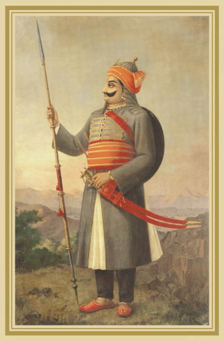

MAHARANA PRATAP

Maharana Pratap 13th Maharana of Mewar (Portrait of Pratap by Raja Ravi
Varma)
- Maharana Pratap was born in Hindu Rajput family to Udai Singh II of Mewar and Jaiwanta Bai.
- His younger brothers were Shakti Singh, Vikram Singh and Jagmal Singh. Pratap also had 2 stepsisters: Chand Kanwar and Man Kanwar.
- He was married to Ajabde Punwar of Bijolia and he had married 10 other women and was survived by 17 sons and 5 daughters including Amar Singh I.
- He belonged to the Royal Family of Mewar. After the death of Udai Singh in 1572, Rani Dheer Bai wanted her son Jagmal to succeed him but senior courtiers preferred Pratap, as the eldest son, to be their king. The desire of the nobles prevailed. Udai Singh died in 1572, and Prince Pratap ascended the throne as Maharana Pratap, the 54th ruler of Mewar in the line of the Sisodia Rajputs. Jagmal swore revenge and left for Ajmer, to join the armies of Akbar, and obtained the town of Jahazpur as a Jagir as a gift in return for his help.